Build
Start from a bundled plan, use Apple Intelligence to generate one, build your own from scratch, or import a CSV file.
iPhone, iPad, and Apple Watch
Build, plan, schedule...Check Yourself
Start from a bundled plan, use Apple Intelligence to generate one, build your own from scratch, or import a CSV file.
Apply a plan, or add a quick task.
Mark a workout complete, add notes and photos, or add a Quick Task for something that isn’t part of a plan. Optional push notifications so you don't forget.
iPhone, iPad, and Apple Watch. Plans, progress, and Quick Tasks stay in sync over iCloud.
iPhone
The same highlights from the app: build a plan, add a Quick Task, start from a template, generate with Apple Intelligence, and stay in sync.
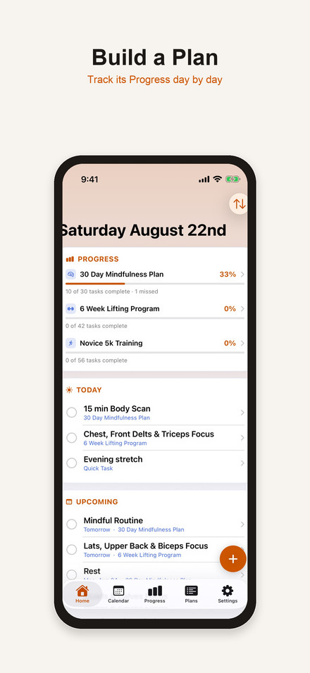
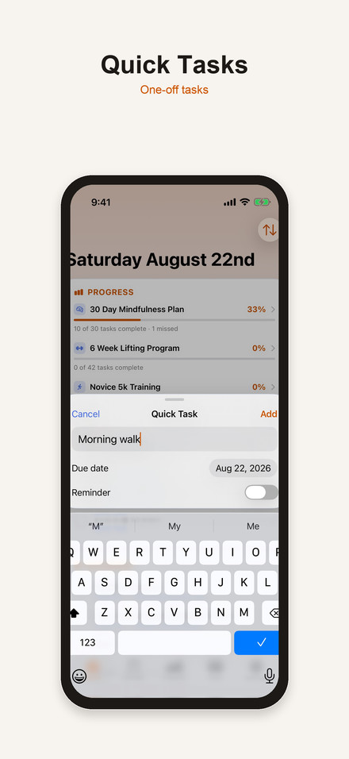
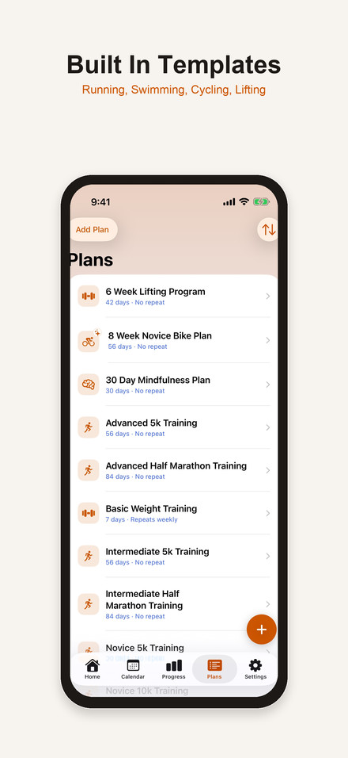
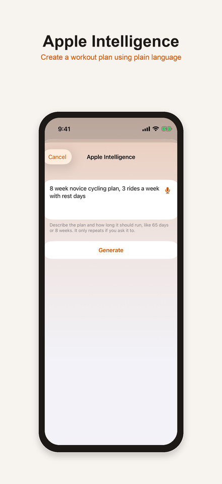
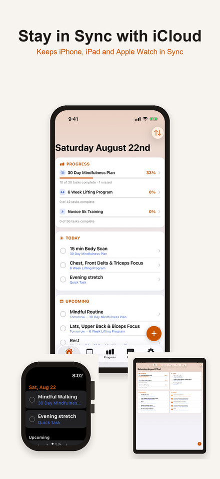
iPad
The same story on the bigger screen.
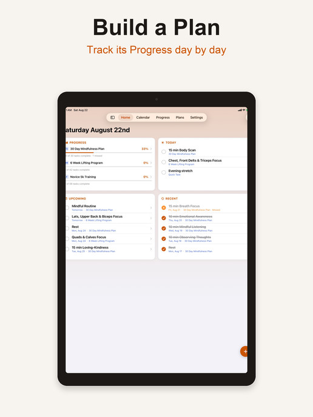
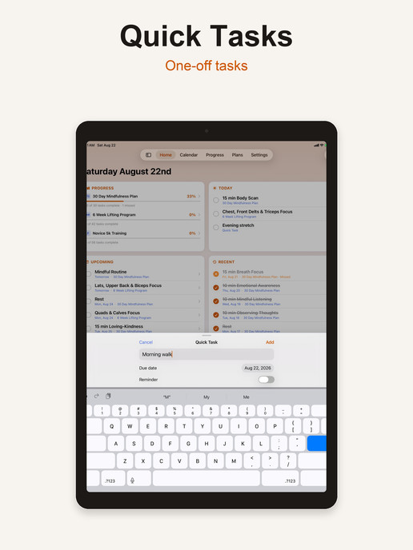
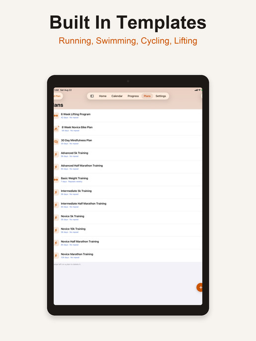
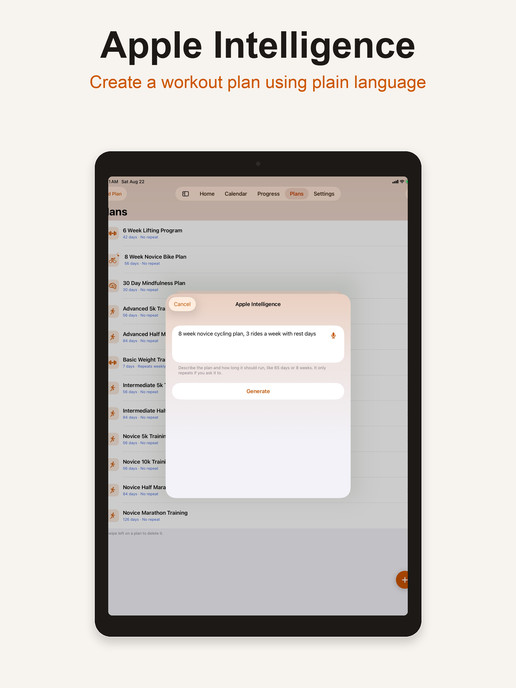
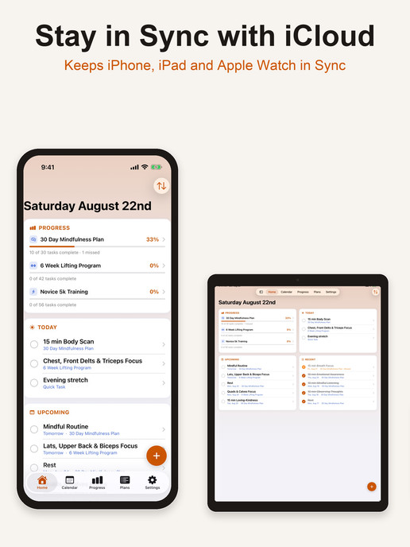
Watch
Swipe between Home, Progress, and Settings. Tap the circle next to a workout — it syncs back to iPhone and iPad.
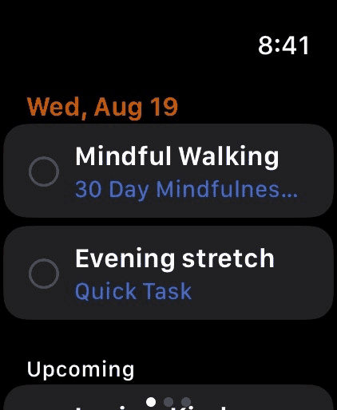

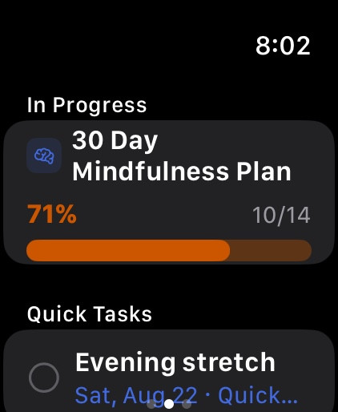
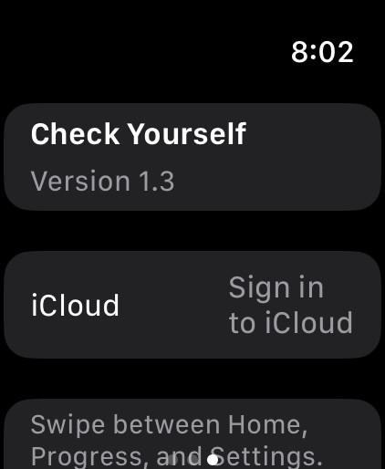
Upcoming and Progress
See what’s next, check off a workout, or tap plus to add a Quick Task.
Optional
Customized push notifications for plans and Quick Tasks. Turn them on in Settings, or when you apply a plan.